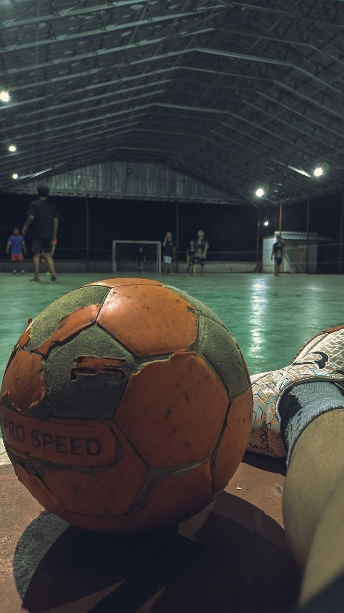
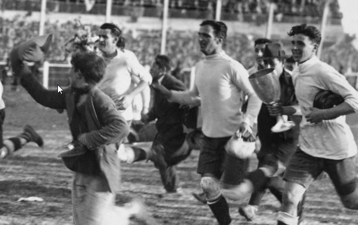
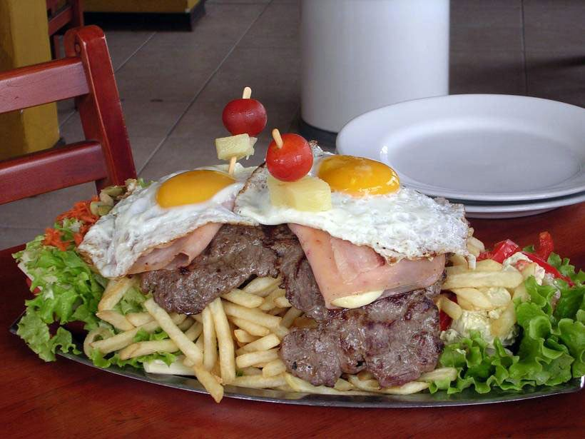

Revista digital
Uruguay es un país pequeño en territorio, pero grande en historia, cultura e innovación. En esta revista digital investigamos el origen de cuatro aportes vinculados a nuestra identidad: el SUN, el fútbol de salón, la vuelta olímpica y el chivito como símbolo de la gastronomía uruguaya.
Índice
- El SUN: un invento uruguayo presente en muchos hogares.
- Fútbol de salón: un deporte nacido en Uruguay.
- La vuelta olímpica: una tradición uruguaya que recorrió el mundo.
- Gastronomía uruguaya: el origen del chivito.



Gastronomía uruguaya
El origen del chivito, uno de los platos más representativos del país.
Leer artículo